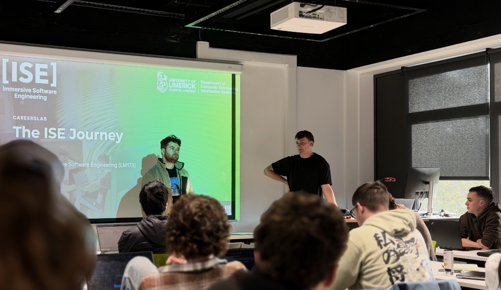
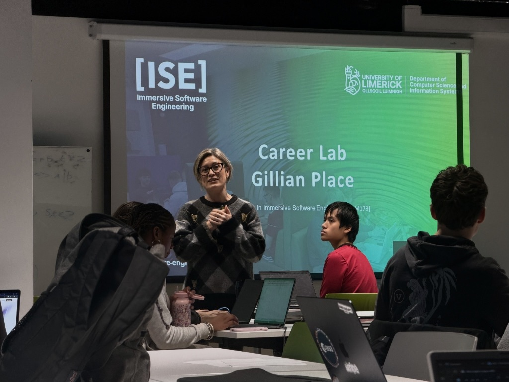
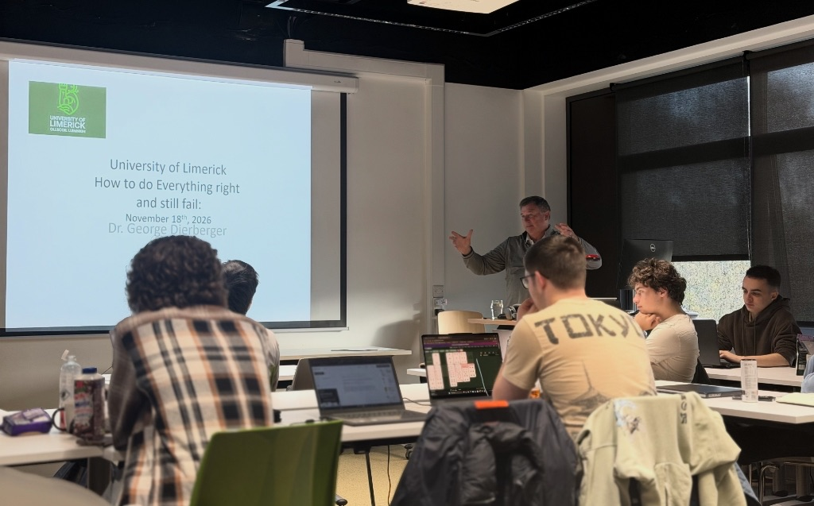

Technical skills
Java, C, TypeScript, JavaScript, C++, Python, Rust basics, REST APIs, Git and responsive web design.
Immersive Software Engineering · University of Limerick
I’m Hubert Kozlowski, a software engineering student focused on full-stack products, quality automation and practical systems that solve real problems for real people.
01 / About
Professional biography, technical capabilities and career interests.
I have been coding for close to a decade across Java, Python, C, C++ and TypeScript. That long-running curiosity has developed into a practical engineering style: I like understanding a problem properly, building a working version early, then improving it through feedback, testing and iteration.
My strongest example is study-ise.vercel.app, a full-stack study platform I designed and built in TypeScript with Supabase authentication, progress tracking and a leaderboard. It began as a maths study aid and is now used by around 40 classmates. The project matters to me because it turned a personal need into something useful for a wider group.
I have also gained startup experience as Co-Founder and CTO of Rianly, where I helped build a unified inbox for construction teams. During a one-week QA Automation internship at NUACOM, I wrote cross-browser Playwright checks for navigation and lead-generation flows. Alongside this, I placed second in the Senior Group at the BT Young Scientist & Technology Exhibition 2024 and was selected as an ECSC Irish National Team candidate in 2025.
I want employers and collaborators to see me as a dependable, curious engineer who cares about quality, communicates clearly and contributes positively to the people around him.
Java, C, TypeScript, JavaScript, C++, Python, Rust basics, REST APIs, Git and responsive web design.
Playwright, Selenium, end-to-end testing, cross-browser testing and AI-assisted test generation.
Ownership, communication, mentoring, community organisation and practical problem-solving.
02 / Values
Three values, the evidence behind them and how they affect the way I work.
Drafted from evidence in your CV. Review these values carefully so they sound like you.
I am most motivated when software leaves the abstract and becomes useful. The ISE study website began as a way to organise my own learning, but its value increased when classmates started using it. That experience taught me that good engineering is not only correct code; it is listening, reducing friction and taking responsibility for the user experience after release. In my career, I want to work close enough to users to understand whether what I build genuinely helps them.
At Rianly, working in a startup meant thinking beyond individual features and considering infrastructure, product direction and the consequences of technical decisions. NUACOM gave me a short but useful introduction to quality automation: repeatable checks help teams trust important user journeys. This value influences how I work with others because I try to make decisions visible, test assumptions and follow through rather than treating problems as someone else’s responsibility.
Volunteering with Give(a)Go and mentoring students in Mullingar have shown me that technical communities accelerate growth. Events, workshops and peer support create opportunities that individuals rarely create alone. I value being the kind of engineer who contributes back: sharing what I know, helping newer students start, and learning from people with more experience. This aligns with my goal of joining teams where mentoring, feedback and knowledge-sharing are part of normal engineering practice.
03 / Lessons from others
Reflections from guest speakers, residency experiences and professional engagement.
Before submission: complete George F. Dierberger’s reflection or remove that evidence card.
Eoin spoke about his career through Trakworx and Stokka. Trakworx had funding and pivoted towards COVID contact tracing when the pandemic changed the market, while Stokka is bootstrapped by three experienced founders.
The practical trade-off behind bootstrapping. I had mostly seen funding as a sign of success, but he explained how investors can influence decisions, create repayment pressure and push hiring at the wrong time.
Growth is not automatically better if it means losing control before the product or team is ready. Bootstrapping can protect decision-making, although it also demands discipline.
When I evaluate future product opportunities, I will treat funding as one option rather than the default. I also want to remember the value of adapting quickly when circumstances change, as Trakworx did during COVID.
Birgit described how not being accepted into art school eventually led her towards computer science after a logic test. She had been interested in design and interfaces, then discovered that computer science could include that work rather than exclude it.
How much of her career came from pivots rather than a fixed plan. Her research has taken her across the Nordics, Europe, Africa and other parts of the world.
I often think about careers as choosing one correct direction early. Her story showed that a rejected path can still feed into a strong professional identity. It also connected with the university value of being creative and innovative: look at things differently, weigh the risks and trust your judgement.
I want to stay open to unexpected routes, especially where software overlaps with design, research and human needs.

Óran and Ciaran spoke about their residency experiences and the difference between startups and large companies. Startups can give interns more responsibility and visible impact, while larger organisations often provide stronger guidance, established standards and exposure to mature engineering practice.
The warning that even an intern project at a large company may be moved away from you. That made ownership feel less guaranteed than I had assumed.
I had been treating a larger company as automatically better. The panel made me realise the right choice depends on the stage of learning: do I need structure and mentorship, or responsibility and fast feedback?
When applying for residencies, I will ask more specific questions about mentorship, ownership, code review, deployment exposure and what happens to intern work after it is finished.

Gillian spoke about entering software without originally knowing much about the field, then moving through roles shaped as much by life circumstances as by planning. A move to the US followed visa eligibility; later she went to Australia, started a family there and returned to Ireland.
How an aviation contract in Shannon that she expected to be temporary became eight and a half years. She was progressing, but not learning enough to feel prepared for the next stage of her life.
I tend to treat stability as success. Her story showed how easily stability becomes a hamster wheel, especially when family, mortgages and other responsibilities make change harder. Her later move into medtech showed the contrast: strong culture, respectful treatment and work where correctness mattered because it supported healthcare outcomes.
When choosing residencies and future employers, I will look beyond title and salary. I want to ask about learning, mentorship, internal mobility and whether the environment will still support me when my life outside work changes.

I have evidence of attending George’s talk, but no reliable notes from its content yet. Add three to five bullet points covering the main message, one surprise, one challenged assumption and one action you will take because of it.
04 / Industry engagement
Expectations, employer learning, meaningful conversations and next actions.
Needs your input: this section must be based on your real Career Connect experience.
Input required
Write 200–300 words using the prompts below. Specific details will make this much stronger than a general description.
What did you expect Career Connect to be like? Which employers, roles or residency opportunities were you most interested in? How prepared did you feel?
What did you learn about employer expectations, residency opportunities, recruitment processes or the skills companies value most?
Name one conversation or interaction that stayed with you. What did the person say, and why did it matter?
What will you do as a result? Examples: update your CV or LinkedIn, contact an employer, prepare a project demo, practise interviews or research a residency.
05 / Community
Volunteering, mentoring and building shared technical resources.
My strongest contribution outside formal coursework has been through technology communities and peer support. As a core event volunteer with Give(a)Go, I help coordinate and run sponsored technology events for Dublin’s builder community. More recently, I joined the core team organising Dublin AI Week. This has developed my organisational awareness because community work is not only enthusiasm; it requires reliability, communication and calm problem-solving when plans change.
I also continue to mentor students at Colaiste Mhuire in Mullingar, running workshops on BT Young Scientist projects and ZeroDays CTF preparation. I benefit personally from explaining ideas clearly, but the larger impact is helping students believe that ambitious technical projects are accessible to them. Having been helped by more experienced people myself, I see mentoring as a practical way to pass that support forward.
The ISE study website is another form of contribution. What began as a personal study aid became a shared resource used by around 40 classmates. Building and maintaining it taught me that peer impact does not always require a formal role. Sometimes the most useful contribution is noticing a shared problem and building something that makes it smaller.
These activities have strengthened my confidence, communication and sense of responsibility. They have also changed how I understand professional identity: being a good engineer includes what you enable other people to do, not only what you produce individually.
06 / Development
Situation, learning, application and next step for significant development activity.
Evidence required: add completion proof for the Library Skills Programme and Assignment Toolkit before submission.
Situation: I wanted a better way to organise study materials and track progress across modules.
Learning: I developed practical full-stack skills in TypeScript, authentication, user-specific data, deployment and iterative product design.
Application: I applied these skills by shipping a live platform used by classmates and by thinking more carefully about user journeys and maintainability.
Next step: improve testing coverage, accessibility auditing and documentation so the platform is easier for others to maintain or extend.
Situation: During a one-week internship, I was introduced to QA automation and contributed checks for navigation and lead-generation flows.
Learning: I learned the basics of Playwright, cross-browser coverage and repeatable assertions. Because the internship lasted only one week, its main value was exposure to professional QA thinking rather than deep production experience.
Application: I now think earlier about testability, critical user paths and how automation can support rather than replace human judgement.
Next step: deepen my understanding of CI quality gates, flaky-test diagnosis and test design for larger systems.
Situation: as Co-Founder and CTO of a startup, I helped build a unified inbox for construction teams across WhatsApp, email and SMS.
Learning: I learned that technical decisions carry product, operational and commercial consequences. Infrastructure and communication matter as much as feature code.
Application: I became more comfortable making trade-offs explicit, prioritising maintainability and connecting technical work to user needs.
Next step: strengthen my system design and DevOps judgment, especially around deployment safety, observability and incident response.
Add the completion date, certificate or screenshot evidence. Then write one short reflection on what you learned about researching, evaluating sources or academic integrity.
Add the completion date, certificate or screenshot evidence. Then write one short reflection on how it changed the way you plan, structure or reference assignments.
07 / Next steps
Realistic, measurable goals and the resources supporting them.
These goals are proposed from your current direction. Adjust them so they are commitments you actually want to make.
Why it matters: I want more experience inside production teams, especially where code quality, reliability and user impact are taken seriously.
Actions: keep my CV and LinkedIn current, prepare concise project demonstrations, apply selectively, follow up after employer events and practise technical interviews.
Why it matters: building Rianly showed me that deployment, rollback and observability are central to trustworthy software.
Actions: build one project with CI, automated tests, health checks, environment separation and a documented rollback path.
Why it matters: security is an engineering responsibility, not a specialist add-on. My CTF experience made me want a stronger foundation in secure coding and common web vulnerabilities.
Actions: complete a structured web-security path, keep notes from CTF exercises and apply secure coding checklists to my own projects.
Why it matters: I want to be the kind of engineer who raises the capability of the whole team, not only my own output.
Actions: deliver more workshops, write short project retrospectives and ask for feedback on how clearly I explain technical decisions.
Resources
Appendix / Declarations
I declare that this material, which I now submit for assessment, is entirely my own work and has not been taken from the work of others, save and to the extent that such work has been cited and acknowledged within the text. I understand that plagiarism, collusion and copying are grave and serious offences in the university and accept the penalties that would be imposed should I engage in plagiarism, collusion or copying. I understand that any use of AI or AI-assisted tools must be declared fully. I have read and understood the assignment regulations set out in the module documentation. This assignment, or any part of it, has not been previously submitted by me or any other person for assessment on this or any other course of study.
Signed: Hubert Kozlowski
ID: Add your student ID
Draft wording for review: Devin, an AI coding assistant developed by Cognition, was used to help structure and implement this portfolio website and to draft some reflective wording from the assignment brief and CV supplied by the student. The student is responsible for reviewing, editing and verifying all content before submission, and for retaining a record of prompts and responses as required by the module.
Update this declaration so it accurately describes your actual use of AI tools.